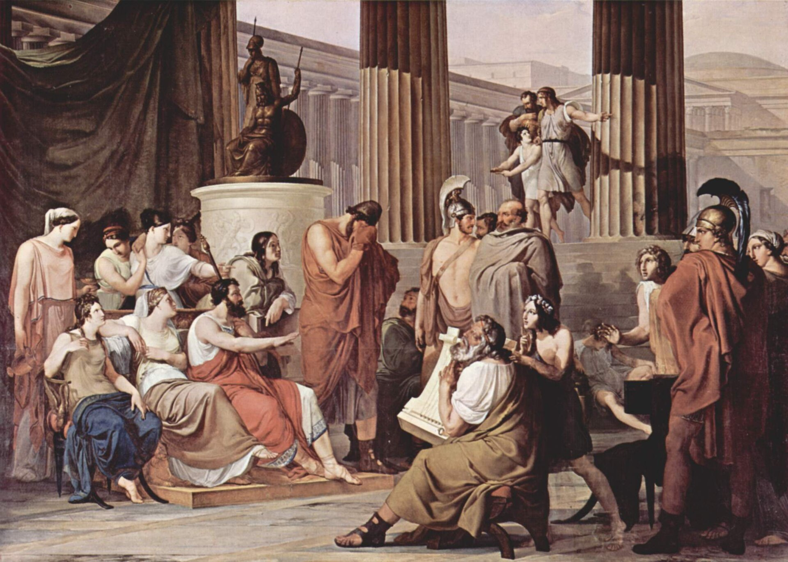

Песнь 7 из 24
Во дворце Алкиноя

Кратко
Окутанный для незаметности туманом (дар Афины), Одиссей входит в роскошный дворец царя Алкиноя и припадает к коленям царицы Ареты, моля о покровительстве. Феаки принимают его с почётом. Он рассказывает о бегстве от Калипсо и кораблекрушении, пока не открывая полностью своего имени. Алкиной обещает страннику помощь в возвращении домой и даже готов отдать ему в жёны Навсикаю.
Главные моменты
- Описание дивного дворца и садов феаков — почти сказочный «край блаженных».
- Мольба к царице Арете — ключ к покровительству.
- Твёрдое обещание феаков доставить гостя на родину.
Значение
Закрепляет гостеприимство феаков и подготавливает рассказ о странствиях.